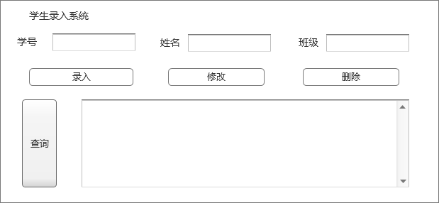
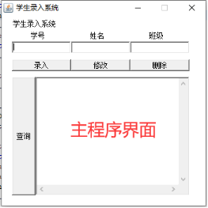
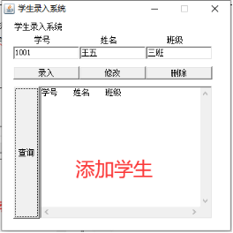
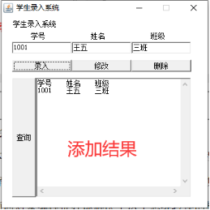
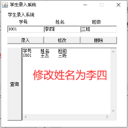
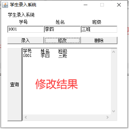
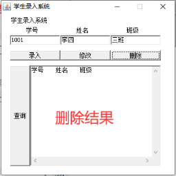

实 验 报 告
学院： 专业： 年 月 日
姓 名 | 学 号 | ||||
班 级 | 指导老师 | 陈奇 | |||
课程名称 | 面向对象程序设计 | 成 绩 | |||
实验名称 | 图形用户界面综合设计 | ||||
1．实验目的 掌握图形用户界面设计的方法 ，掌握事件处理的设计方法 | |||||
2．实验内容 多数学校的学生档案信息都由计算机进行管理，现要求设计一个学生信息管理程序，该程序的功能是在图形化的界面下，用户能够把学生信息输入到计算机中进行查询、修改、删除等操作。程序以文件的形式存储学生信息数据，支持长期保存用户所录入的数据。程序界面及代码请根据功能要求独立完成设计。 | |||||
3．实验环境 PC、Eclipse | |||||
4．实验方法和步骤（含设计） 整个学生录入程序包括录入，修改，查询，删除功能 录入学生，学生有学号，姓名，班级信息。 所以会涉及实体类有这三个成员属性。 然后在主程序中加入学号姓名和班级的输入框和提示框。 添加三个按钮，录入，修改和删除按钮 录入按钮点击后获取三个输入框的数据存入本地文件中 修改按钮点击后，根据学号为索引，修改姓名和班级数据 删除按钮点击后，会删除学号输入框内学号的学生 | |||||
5．程序及测试结果 实现设计中删除学生方法： 首先调用获取所有学生的方法（文件流获取所有学生） List<Student> allStudentFromFile = this.getAllStudentFromFile(); 设置默认下表为-1 int temp = -1; 选遍历所有学生 for(int i =0;i<allStudentFromFile.size();i++){ 判断当前学生的学号是不是传入要删除学生的学号 if(allStudentFromFile.get(i).getSnum().equals(snum)){ 如果是，则保存当前下标 temp = i; } } 循环结束，若下标是-1，则说明没有找到匹配的学号，不执行删除，如果不是-1，则删除指定下标的学生 if(temp != -1){ allStudentFromFile.remove(temp); } 最后调用显示，再次显示数据中的学生 this.saveStudentsToFile(allStudentFromFile, "list.txt"); 结果测试：   | |||||
6．实验分析与体会 在本次实验中我懂得了Container里面又分为Window和Pannel，Window是可以独立显示出来的，平时我们看到的各种各样的应用程序的窗口都可以称为Window，Window作为一个应用程序窗口独立显示出来，Pannel也可以容纳其它的图形元素，但一般看不见Pannel，Pannel不能作为应用程序的独立窗口显示出来，Pannel要想显示出来就必须得把自己装入到Window里面才能显示出来。 但是这次实验中还是碰到了些许问题的： 删除学生中，便利学生，判断学号是否是要删除的学生，如果是，则删除，这个时候数组的长度就会发生变化，循环也就会出现问题，循环到之前的size，但是下表已经不存在，会报错数组越界 解决方法： 先定义一个临时下标为-1，如果又要删除的学生，则保存下标，到循环结束之后再删除就好了。 实验日期 ： 年 月 日 | |||||
教师评语 签名： 年 月 日 | |||||